Feeling single? Don’t worry, you are not alone. Over the last 10 years, the proportion of singles across all age groups rose in Singapore, most prominently among those aged between 25 and 34.
|  | ||
Ok, too much stats? Let's zoom in on the youngters, aka those aged 20-34 years. Perhaps it is more relatable for you! I've also split the data according to gender. Click on buttons to find out more.
In another study, among the respondents who were single, 50 per cent were not currently dating -- and within this group, 38 per cent had never dated before.
What could be the cause of their singlehood?
Asked about their preference of how they want to meet someone who is potentially partner material, singles clearly favoured in-person, face-to-face interactions as the ideal starting point. Meeting via social activities, getting introduced by a friend or colleague, and through religious activities or organisations are highly preferred. Establishing a connection via online means ranked lower than these offline means.